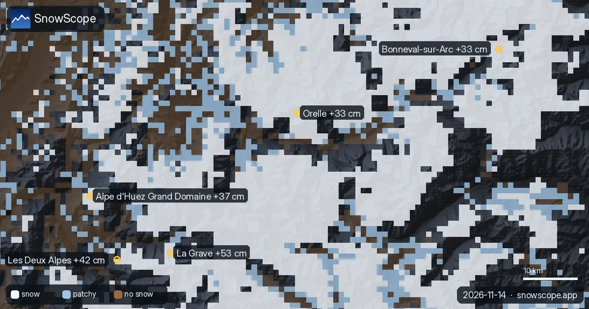
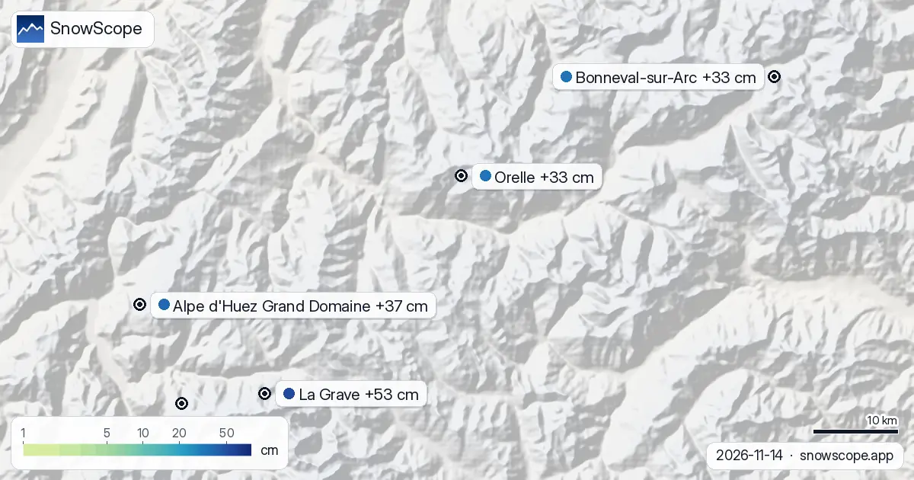

Les Deux Alpes: 38–42 cm of fresh snow in 72 hours (Alps, 14 November)
La Grave gained 53 cm of new snow in the last 72 hours, 7 cm of it in the last 24 hours, so the snowpack there is growing. The snowpack on its upper slopes is now about 67 cm, according to our snow model. For the rivers downstream, how long the snow stays matters as much as how much falls.
See the live snow forecast for Les Deux Alpes in the SnowScope appSnow depth, powder alerts and the 3D map, free.
What the storm added
Across the region, Les Deux Alpes, Alpe d'Huez Grand Domaine and Bonneval-sur-Arc gained 42 cm, 37 cm and 33 cm in the last 72 hours.
Snow now covers 68,650 km² in the Alps; 791 of 1,179 resorts have some on their upper slopes.
| Resort | Snow depth | New snow, 72 h | Coming, next days | Top |
|---|---|---|---|---|
| La Grave | 67 cm | 53 cm | 61 cm | 3,543 m |
| Les Deux Alpes | 45 cm | 42 cm | 53 cm | 3,511 m |
| Alpe d'Huez Grand Domaine | 48 cm | 37 cm | 55 cm | 3,306 m |
| Bonneval-sur-Arc | 46 cm | 33 cm | 23 cm | 2,948 m |
| Orelle | 61 cm | 33 cm | 48 cm | 3,221 m |

Snow still to come
More snow, and so more stored water, is on the way: by 17 November our forecast gives 61 cm at La Grave, 37 cm at Alpe d'Huez Grand Domaine and 38–42 cm at Les Deux Alpes.
Forecasts a few days ahead can change: look at the map again the day before you travel.
Height and the snow line
Height changes everything at La Grave: our model gives 67 cm at the base (3,196 m), 73 cm at mid-mountain (3,369 m) and 74 cm at the top (3,543 m).
At La Grave the freezing level reaches 2,870 m to 3,210 m on 15 November: lower down the snow may turn wet, higher up it stays cold.
What the gauges recorded
Measured, not modelled: the Trigl station (2,914 m) recorded 39 cm of snow on the ground on 14 November, with 14 cm of new snow in 24 hours. The Speikboden - Monte Spico station (2,220 m) reported a snow depth of 28 cm on 14 November, 13 cm of it from the last 24 hours. Measured, not modelled: the Burgbach Mauchele station (2,097 m) recorded 17 cm of snow on the ground on 14 November, with 13 cm of new snow in 24 hours.
Two kinds of numbers here: model estimates for the upper slopes of each resort, and station measurements that are exact but cover one point on the date shown.
Safety and avalanche level
Today the official avalanche danger for the La Grave area is 2 on the 5-level scale (Météo-France BERA).
After fresh snow, wind builds drifts on sheltered slopes. Off-piste, the first days after a snowfall need the most care.
Tips for skiers
- Fresh snow changes fast once the sun is on it: it settles, gets wet and loses its lightness. Morning is the time to ski it.
- Shade protects the snowpack. High, north-facing slopes get less sun, so their snow lasts longer than on the south side.
- Before you ski off-piste or go touring, read the official avalanche bulletin (links below).
- Snow on the map does not mean a resort is open: check lifts and opening dates on the resort's website.
- Get a powder alert in the SnowScope app to know when La Grave gets fresh snow.
About these numbers
Resort snow depths are the deepest snow on the resort's upper slopes from the SnowScope snow model (about 1 km, run of 14 November); they are estimates for an area, not a measurement at one point. Station values are measurements on the date shown. Forecasts can change. Always read the official avalanche bulletin before going off-piste.
Official avalanche bulletins: Météo-France BERA
Cite this report
For research, teaching or the press: the numbers and charts are free to reuse under CC BY 4.0 with this citation.
SnowScope (2026), Les Deux Alpes: 38–42 cm of fresh snow in 72 hours (Alps, 14 November), https://snowscope.app/blog/en/2026/11/alps-les-deux-alpes-fresh-snow-powder-alert-14-november-2026.html, accessed 2026-11-14
SnowScope (Atlas Labs). (2026, November 14). Les Deux Alpes: 38–42 cm of fresh snow in 72 hours (Alps, 14 November). SnowScope snow reports. https://snowscope.app/blog/en/2026/11/alps-les-deux-alpes-fresh-snow-powder-alert-14-november-2026.html
BibTeX
@misc{snowscope2026alpslesdeuxalpesfreshsno,
author = {{SnowScope (Atlas Labs)}},
title = {Les Deux Alpes: 38–42 cm of fresh snow in 72 hours (Alps, 14 November)},
year = {2026},
month = nov,
howpublished = {\url{https://snowscope.app/blog/en/2026/11/alps-les-deux-alpes-fresh-snow-powder-alert-14-november-2026.html}},
note = {Published 2026-11-14 12:09 UTC; accessed 2026-11-14}
}· CC BY 4.0 · Methods, data and tools →
Les Deux Alpes: snow and temperature by height, this winter vs last (tools) →
Follow Les Deux Alpes
Free: a message when fresh snow is coming, and the forecast every morning.
More snow reports

Our picks are La Grave, Pfelders and Les Deux Alpes: we looked at today's snow depth, the new snow of the last 72 hours and the forecast. Of the …

The most snow in the Alps is at Bonneval-sur-Arc: about 55 cm on the upper slopes, according to our snow model. Next come Schnalstal with 48 cm and …

What is true about La Grave, the off-piste mountain under La Meije: terrain, safety, snow by month and the trend, from 46 past winters.